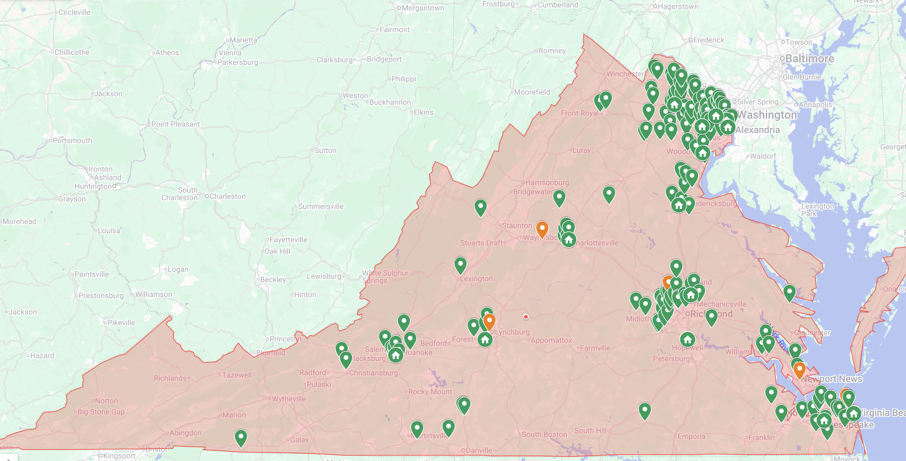
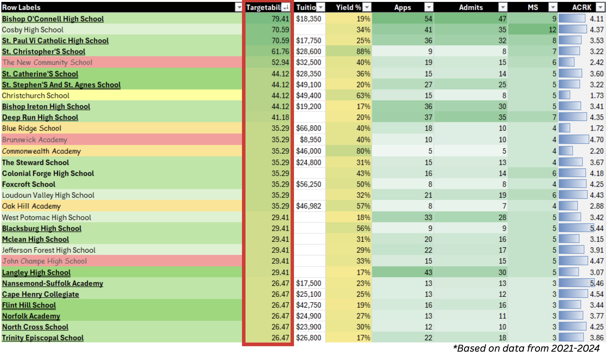

Snapshot
Virginia was a high-opportunity but underperforming market for High Point University. It had strong student potential, high-income pockets, academically rigorous schools, and enough proximity for campus visits to matter. It also had intense competition from in-state public universities, established private institutions, and families who needed clearer proof of value before seriously considering an out-of-state private option.
I was trusted to own the Virginia growth strategy: diagnose the market, identify where demand could be built more efficiently, redesign school targeting, and sharpen how HPU's value was communicated to students and families.
+27.5% year over year
More demand with a more selective pool
+14.3% on a key conversion lever
Presidential Scholars Weekend attendees vs. goal
The challenge
HPU was growing nationally, but Virginia required a more focused strategy. The market was not one audience. Private schools, public schools, high-achieving students, affluent families, value-conscious families, and first-time HPU audiences all behaved differently.
A broad geographic plan was leaving too much opportunity on the table. The strategic question became: how do we grow Virginia demand by reallocating effort toward the schools, students, and families most likely to convert?
What made the region difficult
- Strong in-state competition. Virginia families had credible, familiar public options with stronger regional awareness and lower in-state pricing.
- Uneven perception of HPU. The campus and student experience created interest, but families still asked whether the investment translated into academic rigor and outcomes.
- Weak conversion from broad activity. Some fairs created visibility, but not enough committed movement through the funnel.
- Different school types behaved differently. The strategy needed to distinguish high-probability relationships from low-conversion coverage.
The research
I used CRM analysis, funnel data, school-level performance, and direct conversations with Virginia students and families to understand what was actually happening in the market. The goal was to move from a territory plan based on coverage to a market strategy based on probability.
- Slate CRM data: applications, admits, deposits, enrollment, visit behavior, school source, and prior-year performance.
- School-level trends: which schools produced applicants, admits, deposits, and stronger long-term potential.
- Public vs. private school performance: students from private schools were meaningfully more likely to enroll, which changed how territory coverage should be weighted.
- College fair ROI: the Virginia College Fair Tour included 72 possible fairs, but broad attendance was not the most efficient path to committed demand.
- Qualitative conversations: recurring concerns included cost, academic reputation, distance from home, comparison to in-state options, and whether HPU's experience felt substantive enough to justify the choice.
1. Shift from fair coverage to school targeting
The original recruitment model leaned heavily on broad college fair coverage. The data showed that fairs were not producing enough conversion relative to the time investment, while school visits created better conditions for relationship-building, tailored conversations, and stronger positioning with specific student audiences.
The fall strategy moved from 26 fairs and 51 school visits to 14 fairs and 109 school visits. That was not a small scheduling tweak. It was a reallocation of market investment from general visibility toward higher-probability school relationships.

2. Build a school prioritization model
To make targeting more disciplined, I created a strategic identification equation to evaluate which schools deserved the most attention. The model considered historical application volume, admit and deposit behavior, private vs. public school performance, academic quality indicators, student-family fit, geographic opportunity, relationship strength, and likelihood of producing high-achieving applicants.
The purpose was simple: stop treating every school like an equal opportunity. A strong market strategy needs a way to decide where time should go, where relationships should deepen, and where broad outreach is unlikely to pay off.

3. Tailor the pitch before entering the room
The strategy also needed to improve how HPU showed up at each school. A private school in Northern Virginia, a high-achieving public school outside Richmond, and a more value-sensitive family in another part of the state were not evaluating HPU through the same lens.
To prepare for that, I built an AI-assisted research workflow that generated school-specific context before outreach or visits. It helped surface the school profile, likely student priorities, parent concerns, socioeconomic context, competitive college set, messaging angles, and objections to prepare for.
The goal was not to automate the relationship. It was to make the human conversation sharper. Instead of walking into each school with the same generic HPU story, the counselor could enter with a clearer sense of what that audience likely cared about.
4. Reframe HPU against the real competitive set
Virginia families were not just asking, "Do I like HPU?" They were asking why HPU over Virginia Tech, JMU, UVA, or another familiar in-state option. They were also asking whether an out-of-state private education was worth the cost and whether the campus experience was tied to meaningful outcomes.
That changed the messaging strategy. Campus beauty and student life were still strengths, but they were not enough on their own. The stronger positioning focused on personalization, professional readiness, student transformation, fit, environment, and direct answers to skepticism around cost, rigor, acceptance rate, and reputation.
The results
The strategy produced a clear demand-generation win. Virginia applications grew from 648 to 826, a 27.5% increase year over year and the highest application total recorded for the territory.
At the same time, the admit rate moved from approximately 83% to 70.5%, showing that the region was not just creating more volume. It was supporting a stronger, more selective applicant pool. Campus-visit-linked applications also increased from 259 to 296, which mattered because campus visits were one of HPU's strongest conversion levers.
High-achiever engagement improved as well. Virginia produced 99 Presidential Scholars Weekend attendees against a goal of 80, signaling stronger traction with academically competitive students.
What the funnel revealed next
The work also surfaced the next strategic problem. While applications increased significantly, deposits stayed relatively flat and final enrollment declined. That mattered because it showed the difference between demand and commitment.
The strategy succeeded in generating more interest and a stronger applicant pool, but the next bottleneck was conversion. Virginia families were entering the funnel; the next phase needed to move more of them from interest to deposit through earlier financial-fit conversations, stronger yield communication, better admitted-student follow-up, and clearer explanations of why HPU was worth choosing over familiar in-state alternatives.
Strategic takeaway
Virginia became a case study in smarter growth. The market did not need more generic outreach. It needed better targeting, stronger school prioritization, more audience-specific messaging, and a clearer understanding of which activities actually moved students through the funnel.
The work proved that enrollment growth operates like any other market development challenge: know where demand can come from, understand what blocks conversion, prioritize the audiences most likely to move, and translate the product's value into the language of the buyer.